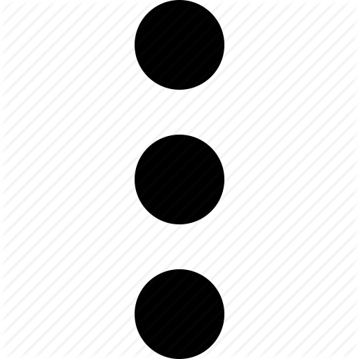
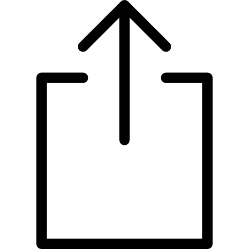

1. Toca el ícono de los 3 puntos , luego busca y selecciona "Agregar a la pantalla...", despues da clic en instalar.
1. Toca el ícono "Compartir"  (en la barra inferior o superior de Safari) y luego "Añadir a inicio".